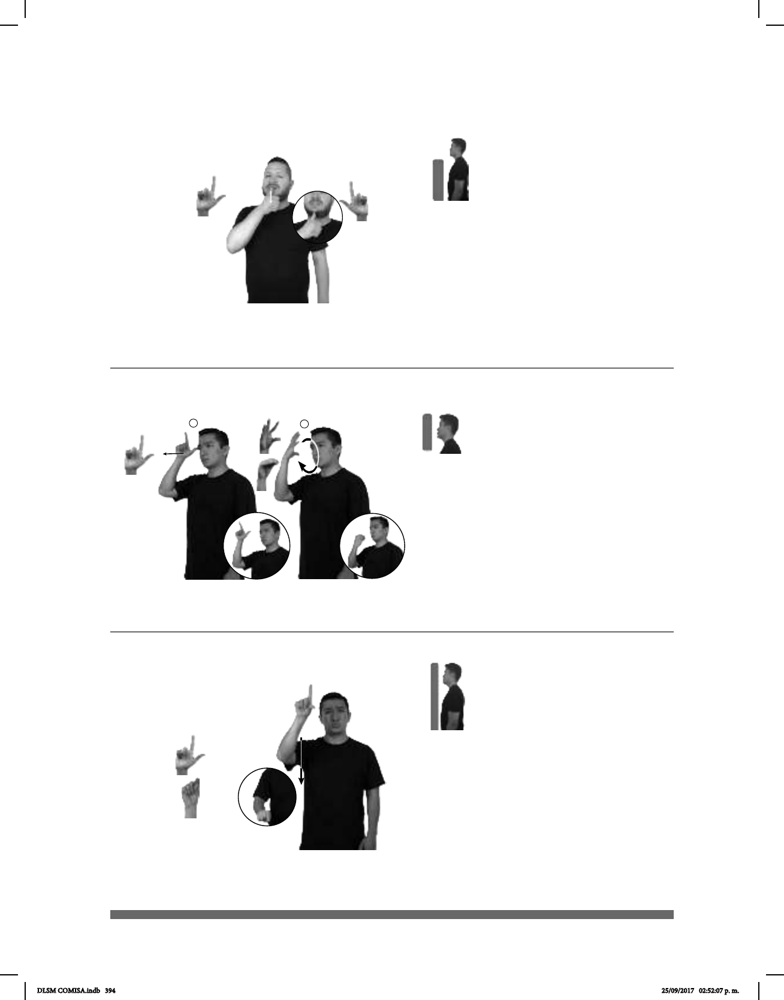

394
1
2
Seña: SS
L.1
Palmas oblicuas
hacia el centro y hacia adentro.
A la altura del abdo-
men.
sust. f. Órgano se-
xual femenino situado en la parte
inferior del tronco, entre la vejiga
y el recto, que se extiende desde la
vulva hasta el útero.
Seña: SC: I. y II. SM
I. L.1; II. Seña que
pasa de 5.2 a O.5
I. Palma hacia fuera;
II. Palma hacia adentro.
I. Sobre la sien; II. A la
altura de la cara.
I. La mano
simula un salto; II. La mano se
mueve formando un círculo mien-
tras los dedos se retraen.
Capital del estado de
Tabasco, perteneciente a los
Estados Unidos Mexicanos.
Seña: SM
Seña que pasa de L.1
Palma hacia fuera.
De la cabeza a la cintura.
Recto mientras los
dedos índice y pulgar se tocan.
Ceño fruncido,
labios cerrados y redondeados.
sust. m. y f. Que no tiene
nada que lo distinga del grupo a que
pertenece, que es conocido o hecho
por todos.
(L-160)
(L-161)
(L-162)
VAGINA ADENTRO CUERPO ORIGINAL MUJER
La vagina es un órgano femenino.
VILLAHERMOSA
allá
MUCHO CALOR
En Villahermosa hace mucho calor.
ESO FEO PARECE VULGAR
Eso es feo, parece vulgar.
DLSM COMISA.indb 394 25/09/2017 02:52:07 p. m.